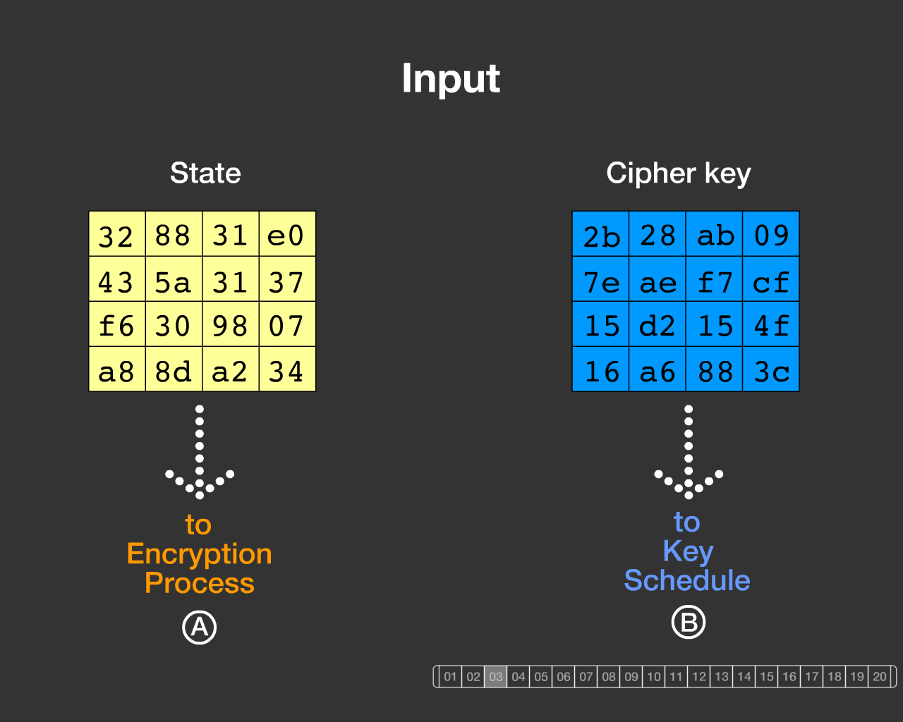
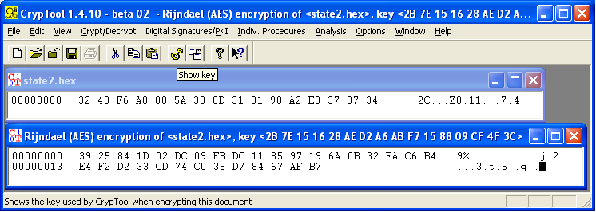

This Flash program visualizes the details of the AES encryption algorithm with a fixed data set. In the opposite, you can arbitrarily choose the data with the Rijndael Inspector.
AES is the current standard for modern symmetric encryption algorithms.
AES is a standardized special case of the Rijndael encryption algorithm, which can handle variable block length for the data input (especially 128 bit) and with variable length for the key (128, 192 and 256 bit).
The visualization of Enrique Zabala demonstrates the AES method using the animation software Flash. Here fixed preset data is used. Both the cleartext message (called "state" in the specification) and the used main key have a length of each 128 bit ( = 16 byte).
The animation then shows step-by-step the procedure of both the actual encryption process applied to the input data block and the process of generating the partial keys from the main key.

Remark 1: Specification
The data of the visualized example are taken directly from the official AES specification of NIST: "Federal Information Processing Standards Publication 197, November 26, 2001, Announcing the ADVANCED ENCRYPTION STANDARD (AES)" (http://csrc.nist.gov/publications/fips/fips197/fips-197.pdf), attachment B.
Another very good description can be found in chapter 11, page 20 at http://www.techheap.com/cryptography/encryption/spec.v36.pdf (A Specification for Rijndael, the AES Algorithm, Dr. Brian Gladman, v3.6, 15th April 2003).
The test data from the spec are:
Input = 32 43 f6 a8 88 5a 30 8d 31 31 98 a2 e0 37 07 34
Cipher key = 2b 7e 15 16 28 ae d2 a6 ab f7 15 88 09 cf 4f 3c
a) Input = State = cleartext block of 16 byte:
3243f6a8885a308d313198a2e0370734
The provided hex file "state2.hex" contains this input too.
Initially the input is written column-wise (!) into the matrix:
32 88 31 e0
43 5a 31 37
f6 30 98 07
a8 8d a2 34
b) Cipher key (main key):
2b7e151628aed2a6abf7158809cf4f3c
The key is also written column-wise (!) into a 4-row matrix:
2b 28 ab 09
7e ae f7 cf
15 d2 15 4f
16 a6 88 3c
c) Output = ciphertext block:
As output you get again 16 byte, displayed in a matrix:
39 02 dc 19
25 dc 11 6a
84 09 85 0b
1d fb 97 32
Written in a file in hex format this is:
39 25 84 1d 02 dc 09 fb dc 11 85 97 19 6a 0b 32

Remark 2: Column-wise Input
Both the given input data and the main key are column-wise read into a 4*4 byte matrix according to the standard specification (16 byte = 128 bit).
If you look at the Flash animation and you want to reproduce the result of the shown process with the implemented AES functionality under the menu entry Rijndael (AES), then you must read out the data within the matrices of the visualization column-by-column and write it into a line (so you get the original sample data of the specification as described in remark 1).
Remark 3: OpenSSL
For comparison: The following OpenSSL instruction writes the ciphertext into the file "state2-enc.hex":
openssl enc -aes-128-ecb -in state2.hex -out state2-enc.hex -iv 0 -K 2b7e151628aed2a6abf7158809cf4f3c
Remark 4: Padding
If you use the 16 byte long exemplary input from the specification (see remark 1) in CrypTool or OpenSSL you get an output of double length (32 instead of 16 byte). This is due to the fact that any input in these implementations is always padded with another 128 bit.
The first 16 byte (the first output block = the actual ciphertext block) are identical with OpenSSL and CrypTool, and also are the same at the animation (and the spec).
The second block, the encrypted padding, is different: The reason is hat CrypTool and OpenSSL are using a different padding string. The padding is not specified in the standard. In the animation no padding is performed.
Sample output of CrypTool:
39 25 84 1d 02 dc 09 fb dc 11 85 97 19 6a 0b 32
fa c6 b4 e4 f2 d2 33 cd 74 c0 35 d7 84 67 af b7
Sample output of OpenSSL:
39 25 84 1d 02 dc 09 fb dc 11 85 97 19 6a 0b 32
a2 54 be 88 e0 37 dd d9 d7 9f b6 41 1c 3f 9d f8
OpenSSL creates with a fixed key (2b7e151628aed2a6abf7158809cf4f3c) with any given plaintext always the same second line (a2 54 be 88 e0 37 dd d9 d7 9f b6 41 1c 3f 9d f8).
CrypTool pads the cleartext with another string (binary 10000000000000...) and therefore CrypTool has a different second line.
Remark 5: Sample Files
The two files "state2.hex" (cleartext) and "state2-enc.hex" (ciphertext) are included in the CrypTool package.
Remark 6: Another AES Animation from the Internet
The master thesis of Thomas Hunger "Der Rijndael (AES) Algorithmus: Eine Visualisierung" can be found at http://home.datacomm.ch/th.aes/Daten/Html/frame.html. The details of the algorithm are visualized in single applets, where any value in hexadecimal form can be entered actually dynamically. This visualization is implemented with a fixed key length and data block length of each 128 bit. This page exists only in German (and would be worth to be translated into English).